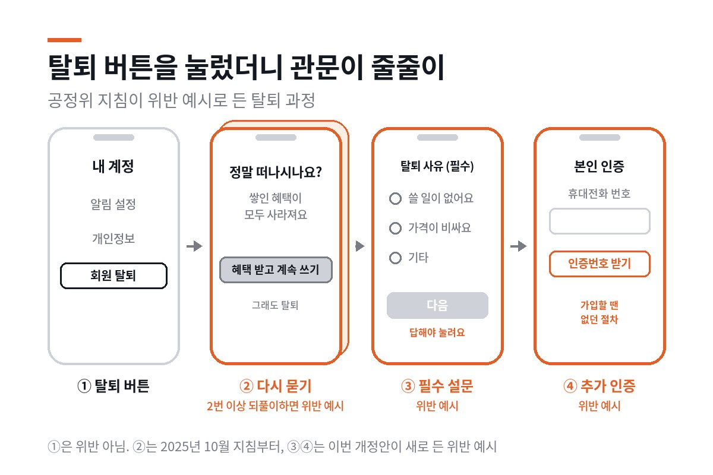

탈퇴 버튼, 몇 번 눌러야 나와요?
공정위가 탈퇴 버튼을 둘째 화면보다 깊이 두면 법 위반 예시로 보는 지침 개정안을 행정예고했어요. 1년 전엔 '권고'에 그쳤던 내용이에요. 아직 확정은 아니에요.

탈퇴 버튼, 둘째 화면 안에
공정거래위원회가 '전자상거래 등에서의 소비자보호 지침' 개정안을 행정예고하고 있다고 11월 10일 밝혔어요. 쇼핑몰·구독 서비스 같은 온라인 사업자가 회원 탈퇴 버튼을 찾기 어려운 곳에 두면 법 위반에 해당할 수 있다고 처음 예시로 적었어요. 행정예고는 11월 6일에 시작했고, 의견은 11월 26일까지 받아요. 아직 확정이 아니에요.
행정예고는 정부가 규칙을 확정하기 전에 내용을 미리 공개하고 누구나 의견을 내게 하는 절차예요. 이번 지침은 국회를 거치는 법이 아니라, 전자상거래법이 맡긴 범위에서 공정위가 직접 정하는 고시예요. 그래서 공정위가 개정안을 만들고, 행정예고로 의견을 받고, 관계 부처 의견까지 들은 뒤 확정해 시행해요. 지금은 의견을 받는 단계예요.
기준은 화면 단계예요. 가입 버튼은 첫 화면에 두면서, 탈퇴 버튼은 로그인한 첫 화면에도, 그 화면에서 바로 이어지는 다음 화면에도 없으면 위반 예시가 돼요. 다음 화면 이름이 '마이페이지'든 '내 계정 관리'든 상관없어요.
둘째 화면 안에 있어도 안심할 수는 없어요. 개인정보 수정, 보안 설정, 구독 관리처럼 소비자가 탈퇴 버튼이 있으리라 예상하기 어려운 메뉴 속에 두는 것도 위반 예시로 들었어요.
탈퇴할 때만 생기는 관문
개정안은 탈퇴 과정에 끼워 넣는 절차도 짚었어요. 탈퇴에 꼭 필요하지 않은데도 가입하거나 물건을 살 때는 요구하지 않던 휴대전화 인증, ARS 인증, 이메일 인증을 탈퇴·구매 취소·계약 해지 때 추가로 거치게 하는 것이 첫째예요.
탈퇴 사유를 묻는 설문에 반드시 답하게 하고, 답하지 않으면 다음 단계로 넘어가지 못하게 막는 것이 둘째예요. 공정위는 두 가지 모두 '취소·탈퇴 방해'의 위반 예시로 적었어요.
같은 개정안에 반품 규칙도 들어갔어요. '선주문 후 생산되는 상품으로 반품이 불가합니다' 같은 문구가 대표적이에요. 법은 주문 제작 상품이라도 반품을 받으면 사업자가 회복할 수 없는 큰 피해를 입을 때만 반품을 막을 수 있게 해요. 그런 피해와 상관없이 주문 제작이라는 이유만으로 반품이 안 된다고 알리면 위반 예시가 돼요.
사이트 첫 화면의 사업자 주소·전화번호·사업자등록번호를 화면을 한참 내려야 보이게 하지 말라는 내용도 들어갔어요. 이건 권고예요.
1년 전엔 '권고'였던 자리
탈퇴 방해를 막는 조항은 이미 법에 있어요. 2025년 2월 14일부터 전자상거래법이 숨은 갱신, 취소·탈퇴 방해 같은 다크패턴, 곧 눈속임 상술 6가지 유형을 금지했어요. 법은 정당한 사유 없이 가입보다 탈퇴를 복잡하게 하는 것을 막아요. 사업자에게 정당한 사유가 있으면 예외가 될 수 있다는 뜻이에요.
공정위는 같은 해 10월 24일 지침을 고쳐 해석 기준을 내놨어요. 탈퇴 의사를 다시 묻거나 재고를 요청하는 단계를 불필요하게 2단계 이상 반복하는 것은 이때 위반 예시가 됐어요. 버튼 위치는 달랐어요. '계정 관리 메뉴에 두라'는 말이 권고사항에만 들어갔어요.
지침에서 법 위반을 판단하는 기준은 '일반사항'이고, '권고사항'은 사업자가 스스로 지키도록 권하는 부분이에요. 이번 개정안은 버튼 위치를 일반사항의 위반 예시로 옮겼어요.
공정위는 개정 이유로 법 위반과 민원이 잦았던 사안을 들었어요. 이번 자료가 직접 든 근거는 아니지만, 공정위는 법 시행 뒤 2025년 2월부터 7월까지 한국소비자원과 점검해 36개 사업자의 의심 사례 45건을 고치게 하거나 시정 계획을 받았어요. 그중 취소·탈퇴 방해가 15건으로 가장 많았고, 9건이 렌탈·렌터카였어요. 그때 나온 사례는 고객센터 전화로만 해지를 받거나 해지 의사를 거듭 묻는 경우였고, 버튼 위치 사례는 아니었어요.
독일은 버튼 이름까지 법에 적었다
독일은 2022년 7월부터 민법 312k조로 해지 버튼을 의무로 만들었어요. 웹사이트에서 가입할 수 있는 유료 구독 같은 계속 계약이 대상이에요.
버튼에는 '여기서 계약 해지'라는 말이나 그만큼 분명한 말만 적어야 해요. 버튼을 누르면 바로 확인 페이지로 가야 하고, 그 페이지에는 '지금 해지' 버튼이 있어야 해요. 두 버튼은 늘 쓸 수 있어야 하고, 바로 쉽게 닿아야 해요. 금융 서비스는 빠져요.
미국은 같은 방향으로 가다 멈췄어요. 연방거래위원회(FTC)는 2024년 10월, 해지 방법이 가입 때 쓴 방법만큼은 쉬워야 한다는 규칙을 확정했어요. 2025년 7월 8일 미국 연방항소법원이 이 규칙을 통째로 무효로 했어요.
법원은 내용이 아니라 절차를 문제 삼았어요. FTC 행정법 판사가 규칙의 한 해 경제 효과가 1억 달러를 넘는다고 판단했는데도 FTC가 법이 정한 예비 규제 분석을 내지 않았다는 거예요.
정리하면 한국 개정안은 독일처럼 버튼 이름과 확인 절차까지 정하지는 않아요. 대신 버튼이 있어야 할 깊이를 화면 단계로 정했어요. 미국 규칙은 새 의무를 만든 규칙이었고, 한국 개정안은 이미 있는 법 조항을 공정위가 어떻게 해석할지 적은 고시예요.
남은 절차
의견은 11월 26일까지 우편·이메일·팩스로 공정위 소비자거래정책과에 낼 수 있어요. 공정위는 관계 부처 의견까지 들은 뒤 확정하고 시행해요. 시행일은 아직 정해지지 않았어요.
소비자보호 지침은 법을 어떻게 해석할지 보여 주는 기준이에요. 지침에 적힌 예시는 법 위반에 '해당할 수 있는' 경우이고, 실제 제재는 사안마다 따져요. 공정위는 2025년 점검 때 시정 계획을 낸 사업자가 고치지 않으면 시정명령과 과태료를 부과하겠다고 밝혔어요.
2025년 점검 때도 일부 사업자는 시스템을 고치는 데 시간이 걸린다며 바로 고치지 않고 시정 계획을 냈어요. 탈퇴 때 인증을 거치게 하는 데 계정 도용을 막으려는 이유가 있다면, 개정안의 '꼭 필요하지 않은데도'라는 조건을 두고 따질 여지도 있어요.
확정되면 탈퇴 버튼을 설정 메뉴 깊숙이 둔 서비스는 화면 구성을 바꿔야 해요.